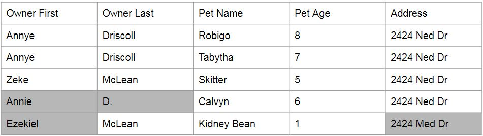
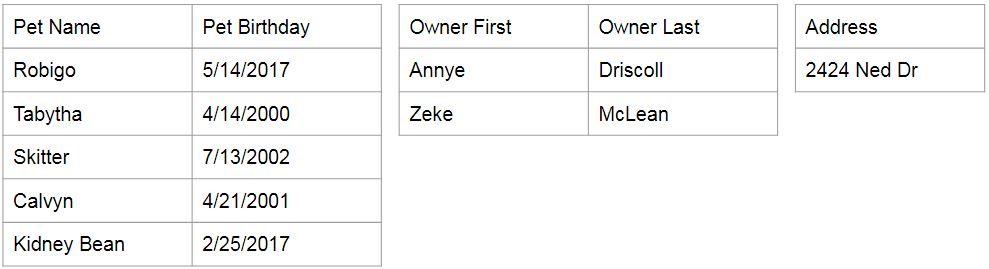

Popularity winner
Relational database = organizes data into one or more tables of columns and rows with a unique key identifying each row (record).

Photo credit: Wikpmedia
Pet Tracker DB
Relation = data points related to each other are stored in a table.
Relation = tables are related to each other.

Relational Data - Why?
- ACID makes it reliable for critical transactional systems.
- Acts as an all-purpose database.
- Older models did not perform well; they encouraged redundant and inaccurate data.
- Newer models are more specialty - solve a problem in one area but come at a high cost in other areas.
Relational Data - Why?
- A set of rules called the normal forms ensures data redundancy is reduced and data integrity is upheld.
- The process of applying the normal forms is called normalization.
Pet Tracker DB - now in flat form!
Flat Pet Tracker DB
After a couple of additions...
Decomposition
= the process of splitting data into tables.
Decomposition - back to the normal forms
If we follow the normal forms when decomposing, then we are guaranteed we will be able to reconstruct the data.
Decomposition - First Normal Form
- Eliminate repeating groups in individual tables.
- Create a separate table for each set of related data.
- Identify each set of related data with a primary key.
Decomposition - Second Normal Form
- 1NF.
- Every non-prime attribute of the relation is dependent on the whole of every candidate key.
Decomposition - Third Normal Form
- 2NF.
- All the attributes in a table are determined only by the candidate keys of that relation and not by any non-prime attributes.
Successfully decomposed and normalized!
Joins
We put the data back together by joining tables

Joins
Every row in the pet table is matched to a row in the owner table on a certain field
What is Pets ⨝ Owners on Pet Name = Owner First?
Joins
The result: Pets ⨝ Owners on Pet Name = Owner First

Joins
During decomposition, we always copy a certain field to each table to serve as the relationship.
What is Pets ⨝ Owners on Owner First = Owner First?